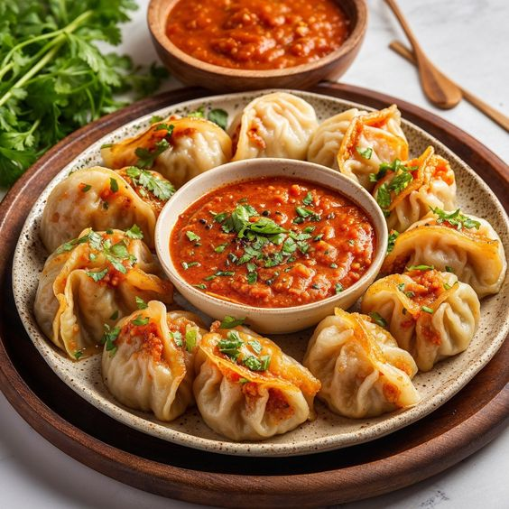

Famous Foods of Sikkim
Momo

Momo Recipe:
- Ingredients:
- 1 cup all-purpose flour
- 250g minced chicken or vegetables
- 1 tablespoon soy sauce
- 1 tablespoon ginger-garlic paste
- 1 onion, finely chopped
- 2-3 green chilies, chopped
- 1 teaspoon sesame oil
- Salt to taste
- 1/2 teaspoon black pepper
- 1 tablespoon chopped coriander
- Instructions:
- Prepare the dough by mixing flour with water and a pinch of salt. Knead until smooth and let it rest.
- In a bowl, mix minced meat or vegetables with soy sauce, ginger-garlic paste, onion, chilies, sesame oil, salt, pepper, and coriander.
- Roll the dough into thin circles, place a small amount of filling in the center, and fold into dumplings.
- Steam the momos for about 15-20 minutes until cooked through.
- Serve hot with spicy dipping sauce.
Thukpa
Thukpa Recipe:
- Ingredients:
- 200g noodles
- 1 liter chicken or vegetable broth
- 1 cup mixed vegetables (carrots, beans, cabbage)
- 1 tablespoon soy sauce
- 2 cloves garlic, minced
- 1 tablespoon ginger, minced
- 1 tablespoon oil
- Salt and pepper to taste
- Chopped spring onions for garnish
- Instructions:
- Heat oil in a pot and sauté garlic and ginger until fragrant.
- Add vegetables and stir-fry for a few minutes.
- Pour in the broth and bring to a boil. Add soy sauce and season with salt and pepper.
- Add noodles and cook until tender.
- Serve hot, garnished with chopped spring onions.
Phagshapa
Phagshapa Recipe:
- Ingredients:
- 300g pork belly, cut into pieces
- 1 tablespoon vegetable oil
- 1 onion, finely chopped
- 2 cloves garlic, minced
- 1 tablespoon ginger, minced
- 2-3 green chilies, sliced
- 1 tablespoon soy sauce
- 1 teaspoon turmeric powder
- 1 teaspoon chili powder
- Salt to taste
- Chopped coriander for garnish
- Instructions:
- Heat oil in a pan and sauté onions, garlic, and ginger until golden brown.
- Add pork pieces and cook until they start to brown.
- Add green chilies, soy sauce, turmeric powder, chili powder, and salt. Cook for a few more minutes.
- Add a little water if needed and simmer until the pork is tender and the flavors are well combined.
- Garnish with chopped coriander and serve hot with steamed rice.